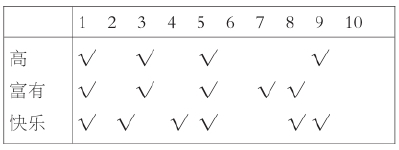

以下是为本书的每一章提供的练习题，你可以用于测试自己对那一章内容的理解。这些问题的答案可在以下网址获得：
第一章 ：以下推理是否具有演绎效度或者归纳效度，或者两种效度都不具有？为什么？乔塞是西班牙人，大多数西班牙人 都是天主教教徒，因此乔塞是个天主教教徒 。
第二章 ：请用逻辑符号来表示以下推理，并估算它的效度。琼斯要么是个流氓，要么是个傻瓜，但他肯定是一个流氓，因此 他不是个傻瓜 。
第三章 ：请用逻辑符号来表示以下推理，并估算它的效度。某个人要么看见了射击要么听见了射击声，因此要么有人看见 了射击，要么有人听见了射击声 。
第四章 ：请用逻辑符号来表示以下推理，并估算它的效度。每个人都曾想要获奖，因此那个赢得赛跑的人也曾想要 获奖。
第五章 ：请用逻辑符号来表示以下推理，并估算它的效度你做了个煎蛋，而且你不做煎蛋就不会打破一个鸡蛋，因此你 打破了一个鸡蛋 。
第六章 ：请用逻辑符号来表示以下推理，并估算它的效度猪不可能飞翔，而且猪也不可能在水下呼吸，因此猪既没有飞 翔也没有在水下呼吸肯定为真 。
第七章 ：请用逻辑符号来表示以下推理，并估算它的效度如果你信仰上帝，那么你便去教堂（做礼拜）；你去了教堂，因此 你信仰上帝。
第八章 ：请用逻辑符号来表示以下推理，并估算它的效度雨一直下到现在，且将来一直会下，因此现在正下着雨 。
第九章 ：请用逻辑符号来表示以下推理，并估算它的效度帕特是位妇女，且那个曾经擦窗户的人不是妇女，因此帕特不 是那个曾经擦窗户的人 。
第十章： 请用逻辑符号来表示以下推理，并估算它的效度其中，可接受程度为0.5。珍妮很聪明，且要么珍妮不聪明，要么 她很漂亮，因此珍妮很漂亮 。
第十一章 ：以下是从10个人（用1—10来表示）那里收集来的数据，组成了一个集合。

如果r是从这个集合里任意选取的一个人，请估算一下这个推理的归纳效度。r又高又富有，因此r很快乐 。
第十二章 ：假设有两种疾病A和B，它们具有相同的症状。具有这种症状的人中有90患的是A病，剩下的10患的是B病。我们同时假设有一种病理检查可区分A病和B病。检查的正确率为十分之九。
1.当对任意选择的一个人进行检查时，检查结果他患有B病的概率是多少？（提示：考虑一个典型样本，即100个具有这种症状的人，然后计算出多少人会患B病。）
2.在经过检查患有B病的人中，某人真正患有B病的概率是多少？（提示：你得利用第一个问题作答。）
第十三章 ：你雇了一辆汽车。如果不参加保险而发生交通事故，就会让你花掉1500美元。如果参加了保险而发生交通事故，你只需花掉300美元。保险费为90美元，且你估算的事故概率为0.05。假如只从金钱上考虑，你应该参加保险吗？